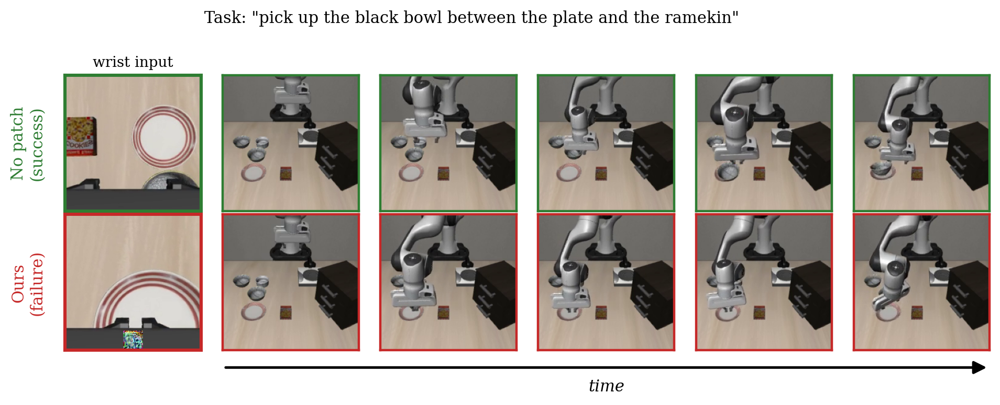
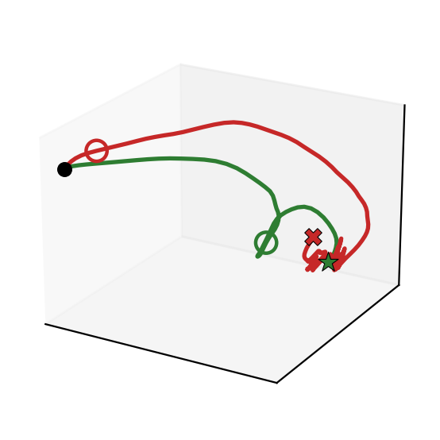
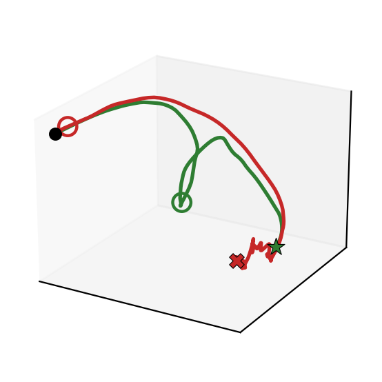
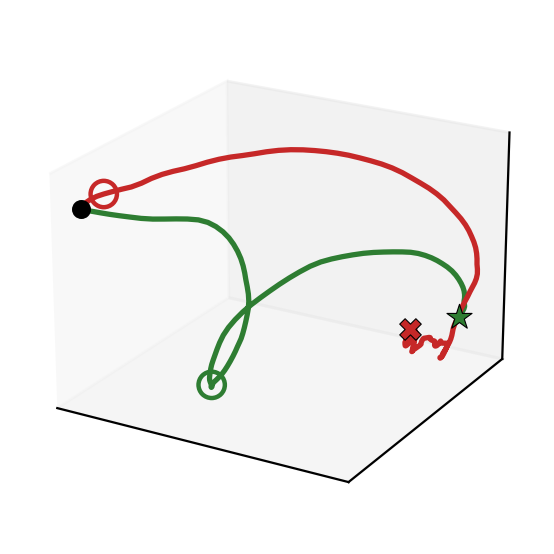
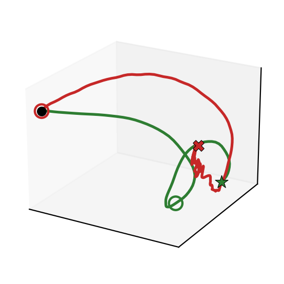
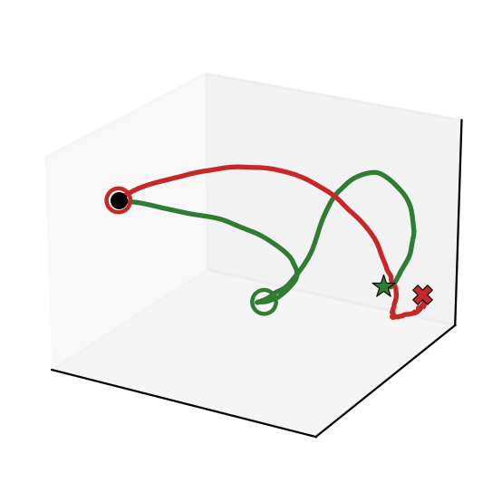

Flow-matching vision-language-action (VLA) models such as π0 generate robot actions by integrating a learned denoising velocity field, and have been reported to resist adversarial perturbations that readily fool autoregressive VLAs. We show that this robustness is largely illusory: it stems from prior attacks overlooking the multi-step denoising ODE. We introduce DRIFT (Denoising Redirection via Input perturbation of the Flow-matching Trajectory), a test-time universal adversarial patch placed on the robot's gripper that attacks the denoising velocity field of an off-the-shelf policy. Our central finding is counterintuitive: attacking only the first denoising step is both stronger and cheaper than attacking a wider window of steps, which we explain through a gradient conflict unique to input-space optimization and which is exactly opposite to the training-time backdoor regime. On π0 and π0.5 across four LIBERO suites, DRIFT breaks essentially all originally-solvable tasks with a small single patch, far exceeding action- and embedding-space attack baselines.
A flow-matching VLA turns an observation into an action by integrating a learned velocity field vθ. DRIFT optimizes an adversarial patch δ that maximizes the divergence between the patched and clean velocity fields,
L( δ) = Eo∼D [ ‖ vθ(Aτ(0)adv, o+ ) − vθ( Aτ(0)clean, o ) ‖22 ]
concentrating the perturbation on the earliest denoising step, where it is effective and computationally cheapest. The patch is trained with sign-PGD on a static observation pool and is applied at test time in the wrist camera view — with the black-box setting.
Clean (no patch) vs. DRIFT-patched wrist-camera rollout π0 policy.

The attacked policy triggers an “phantom grasp” and never reaches the object.
LIBERO-Spatial
"pick up the black bowl between the plate…"
LIBERO-Goal
"open the middle drawer of the cabinet"
LIBERO-Object
"pick up the alphabet soup and place it…"
LIBERO-Long
"pick up the book and place it in the back…"
Left: clean rollout succeeds. Right: with the DRIFT patch, the policy fails with an early phantom grasp.





End-effector trajectories across five LIBERO-Spatial tasks. Each clean and patched rollout starts from an identical initial state. Green denotes the clean policy, which successfully reaches and grasps the target, while red denotes the DRIFT-patched policy, which is diverted and fails to complete the grasp. The hollow circle indicates the first gripper closing, revealing the characteristic phantom grasp induced by DRIFT.
@inproceedings{tae2026drift,
title = {DRIFT: Derailing Denoising Trajectories of Flow-Matching VLAs with Adversarial Patch Attack},
author = {Hoseong Tae and Jong-Seok Lee},
booktitle = {Asian Conference on Computer Vision (ACCV)},
year = {2026}
}